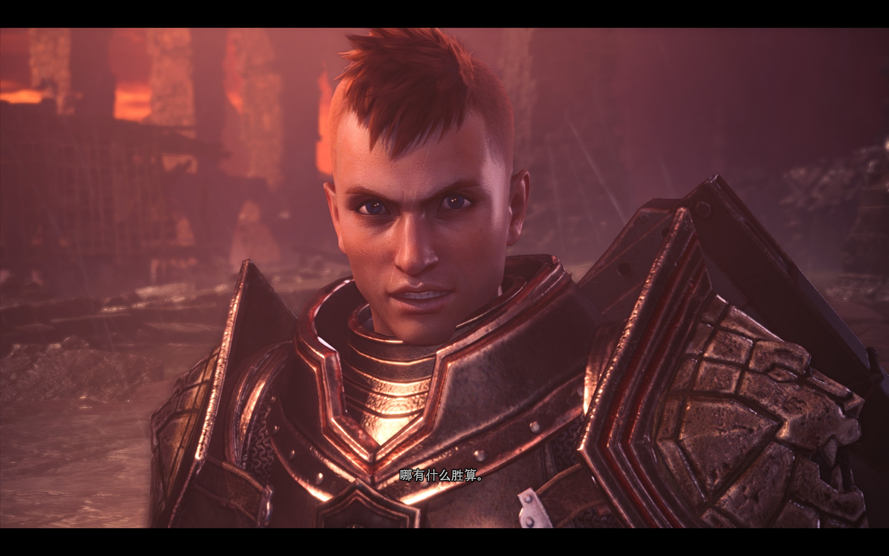
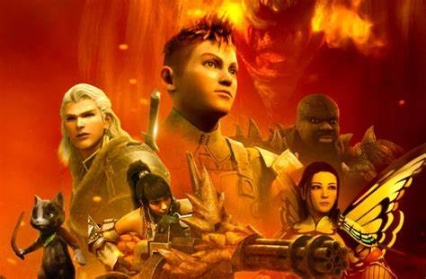

|  |  |
阳光哥，真名艾登。 艾登。在通往新世界的船上，兴奋的猎人们正七嘴八舌地讨论着他们将如何轻松击退熔山龙。艾登并没有让他们闭嘴，也没有用蜡在一旁给布娃娃的眼珠抛光。他只是一个 20 来岁的红发青年，并不是什么老练的捕鱼行家，但两者的气场是相似的。古龙并不是一般的威胁，而艾登向他们讲述了一个自己过去的故事，提醒他们自己应该对古龙满怀敬畏之心。
艾登曾经在数款《怪物猎人》游戏作品担任配角，而《工会传奇》讲述了艾登年轻时的故事。他来自一个小村子，渴望成为一名公会认证的怪物猎人，就和数代游戏中的玩家们一样。虽然片长 58 分钟的电影节奏紊乱，但本片还是完美还原了每个新手玩家第一次狩猎时，渴望猎杀一些大型怪物的冲动。
在新大陆中于苍蓝星并肩作战，面对黑龙，传说中的禁忌，他并没有害怕，而是鼓起勇气，与苍蓝星共同面对，并舍身取义，以自己受重伤来换取苍蓝星的安全和后续部队的到来，之后成功击退黑龙。 |
艾登的训练过程正是《工会传奇》的出色之处。他不仅会激动地讨论着以后要狩猎什么样的大型猛兽，然后每次狩猎都会不出意料地失败。而当尤利乌斯和其他猎人忙着狩猎时，艾登正和所有新手玩家们一样，被怪物吐出的蛛网缠身、被怪物拖着满地图乱飞、被身形巨大的怪物暴揍。 拖油瓶经常反倒让任务难度大增。不过当委托终于完成，艾登满身淤青地躺在地上时，他还是为团队完成了任务而高兴。无论自己最后有多惨，这种胜利的喜悦正是鼓舞着所有萌新猎人们度过游戏早期的乐趣所在。在艾登的故事中，他逐渐树立了信心、在挫折中总结了经验，每一次狩猎中都在自我成长。点击这里返回 |